|
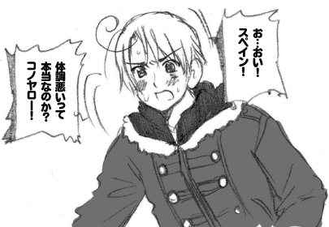
■２分でなんとなくうわべだけはつかめるようなヨーロッパ経済■
このマンガの中では国の「風邪」＝不景気みたいな感じです。
ちなみに体調不良は政治・経済がうまくいってない。
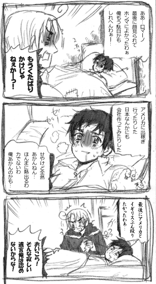
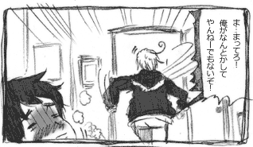
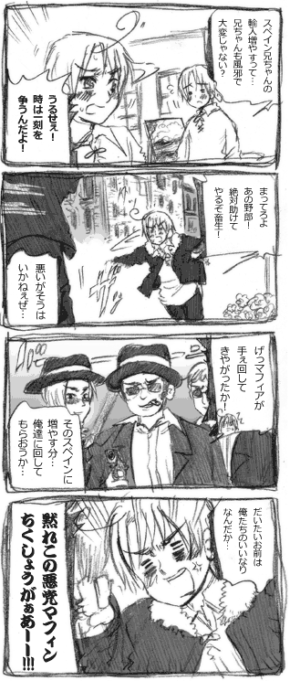
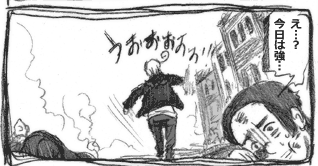
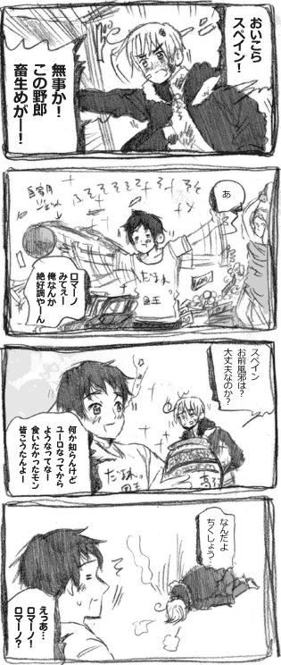
90年代初頭はそれはもう不景気で
アメリカに出稼ぎに行くくらいしか
食べていく方法がなかったくらいだったのに
いまはEUきっての優等生になったスペイン。
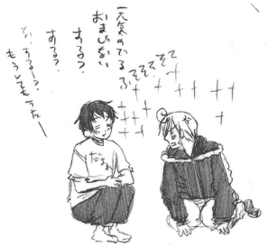
借金で貧しい生活を余儀なくされた王様がいたり
アメリカにぼこられたせいで国際地位を失ったり
かわいそうな過去を振り切って頑張れ！
■花作り貴族■
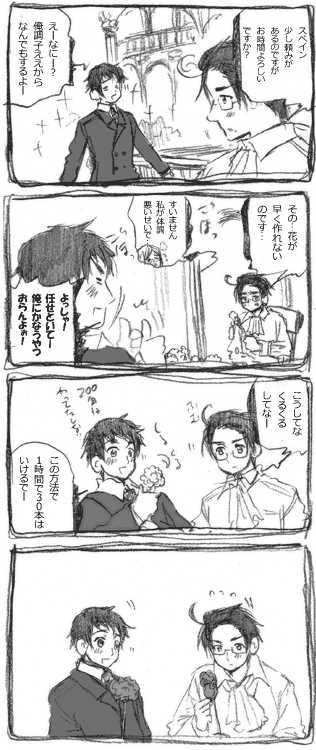
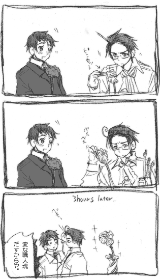
なぜかゲルマン系は職人気質。
しかしオーストリア人（主にウィーン人）は
職人気質に＋のんびりや＋完璧主義が付属するので
なかなか仕事が終えられません。
この気質のせいかオーストリア経済は
あんまりぱっとしません。
スペインみたいにてげてげな方が今の時代いいのかも。
ドイツ人だと職人気質ですが期日には
間に合わせるタイプが多いようです。
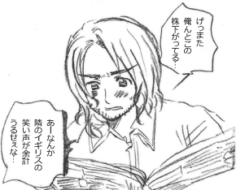
■スイスと銀行■
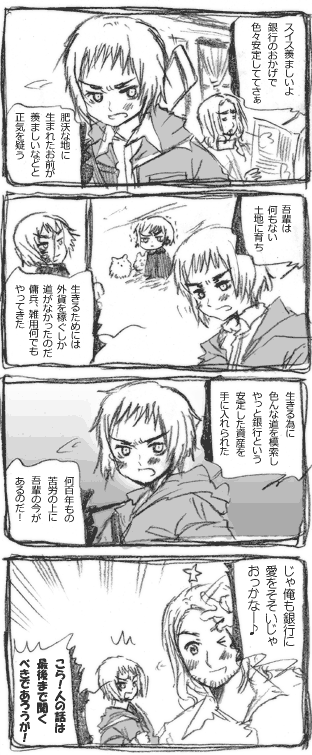
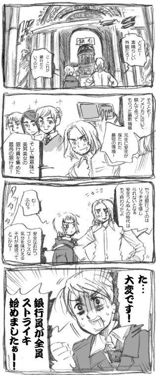
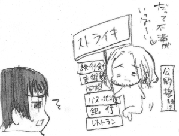
だってストライキが好きなんだもん.
フランスでは日常イベントのようにストライキがあちこちでぼっ発します。
美術館いったらストライキで入れない
じゃあ別のところ行こうと思ったらバス電車みんなストライキ。
くたくたになって帰ったらホテルもストライキだ。
やっと安宿見つけたら電気がストライキ。
公務員だって腹が立ったらストライキ！
ちなみにガス・水道もこっちの予定
全くお構いなしにストライキ始めるぞ！
というわけでストライキ大国フランスには
「ストライキ予定表」というものが存在し
旅行などする時などはみておかないと
↑みたいなことも本気で起こってしまいます。
でも突如始まるストライキもあるので油断はできません。
国鉄を１か月もとめたことだってあるという…。
その間フランス国民はどうやって移動してたんでしょうか？
みなさんも何かにつけて働きたがらない国フランスに
旅行に行く際は気をつけてください。
|

軽くまとめるとヨーロッパこんな感じだよ！
■中欧■
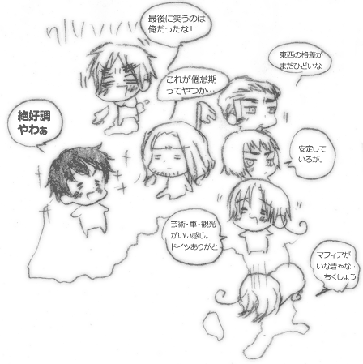
■北欧/バルト周辺■
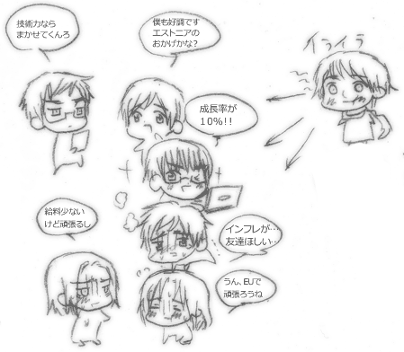
地味にロシアに嫌がらせされながらも
高い伸び率を見せるのがエストニア。
さすがバルトの優等生。
あとそんなエストニアと友好関係を結んでいる
フィンランドもなかなか手がたく好調です。
お互いが一番の貿易相手。
スウェーデンも好調ですが、稼げば稼いだだけ
税金で持ってかれるお国柄のためあんまり実感はなさそうです。
ラトビアもEUのおかげで経済がじわじわ成長していますが
そのためにインフレが起こって一般市民には
モノの値段が上がっただけという状態に。
またラトビアが持ってるものは近隣の国みんな持ってるので
（畜産がメイン、じゃがいもなど）他二国と比べると
若干成長が遅いようです。 |
■トルコ・ギリシャ■
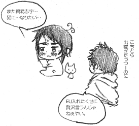
ギリシャは色々あってEU入りできたものの
貿易赤字を観光業で埋めるという自転車操業をしていましたが
EU加入、ユーロ導入後の成長率が半端じゃないので
そのうち挽回できそうですね。
トルコはちょっと前からEUに入りたがってますが
イスラム教圏なこと、キプロス島をめぐって
ギリシャといがみ合い中ということ
経済や司法の仕組みが違いすぎるなどの
問題が多く未だに入れていません。
EU中の国々は「トルコは無理」と思ってますが
あんまり口には出さないようです。
それにEU内でギリシャとガチンコバトルやられたら困るしなぁ。
|
■東欧■
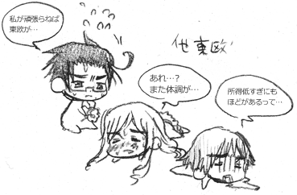
今悲惨なのが東欧諸国。
EU入って好転したものと思われていた
優等生ハンガリーも今は停滞気味。
ユーロ導入したいけどできない。
ハンガリー・オーストリアなどはまだいい方で
その他東欧諸国はGDPがギリシャの
三分の一以下が多数を占めます。
モルドバに至ってはギリシャの４３分の１程度。
あとハンガリーにまたハンガリー暗黒期を
築いたあのロシアの手が伸びてきています。
ハンガリーの資源をめぐってEUとロシアで
対立がおこってるようです。
EUはハンガリーにロシアと付き合うな！と
警告していますが、当のハンガリーは
「昔酷いことされたけど利益が上がれば
めっけもんよね。よし話だけでも聞いてみよう」
といった姿勢でEUをやきもきさせています。
ハンガリーってゴーイングマイウェイですよね。
余談ですが東欧での日本の人気は高く
「日本は信頼できる」にはいと回答した人が
８５％超えたそうだ。 |
■余談集■
マフィアの話。
■南イタリアのマフィア■
イタリアンマフィアは２００年の歴史を持ち
シチリア島などを拠点にしている犯罪組織です。
南イタリアは今もこの組織に牛耳られており
政治もマフィアが裏で握ってるといいます。
ちなみにWW2中はムッソリーニの働きかけにより
このマフィアが一時壊滅状態になりました。
マフィアがこんな状態になったのは後にも先にも
この時だけです。
どうでもいい話ですがポーランドにも
それっぽいのがいましたが数年たたずに消滅しました。
■南イタリアを巣食うマフィア産業「誘拐」■
南イタリアの主な産業に「誘拐」があります.
文字通り有名人を誘拐し身代金を頂くといものです。
誘拐をするためのマフィア組織が50年前からすでに存在し
今も無防備に徘徊する有名人を狙って活動しています。
警察関係者にもマフィアの息がかかってる場合も多く
助けるには、いかに早く身代金を渡すかが重要です。
マフィアの人質の監禁法は生ぬるいものではなく
家畜同様にあつかわれ、乱暴にされたり
食事も満足に与えられないことが多いようです。
そしてこのマフィア産業、イタリアの経済の７％を
支えているといわれています。
南イタリアは高い失業率、安い給料に加えて
マフィアやそのほか同じ系列の暴力組織に
家や財産を取られても、警察が役に立たないので
南イタリアに住む一般の人たちは少しでもお金がたまると
北イタリアの主な都市に脱出を図るようになってきています。
あの美しい風景がマフィアによって無人の廃墟に
なっていくのは悲しいものです。
■フランス人「やっぱ仕事も優雅にやりたいし」■
フランスは前に一人が働く時間を短縮して
他の人がもっと働けるようにしよう！という制度を
作ろうということになりました、が。
「えー２時間も短縮されんの？ そしたら２時間分の
仕事つめてやんなきゃいけないじゃん…。
俺忙しいのって嫌いなんだよね。
確実にティータイムなくなるよなぁ…。
もっと人生はゆっくりあるべきだよ」
とフランス人らしい理由で猛反対されて
結局なかったことになってしまいました。
一方フランスとはまた別の働きたくながりなイギリスは
この制度を勝ち取るために地下鉄止めようとしたり
路上で暴れまくり、なんとか時間短縮を勝ち取ったようです。
ついでに給料まで上げさせました。
|
|
|